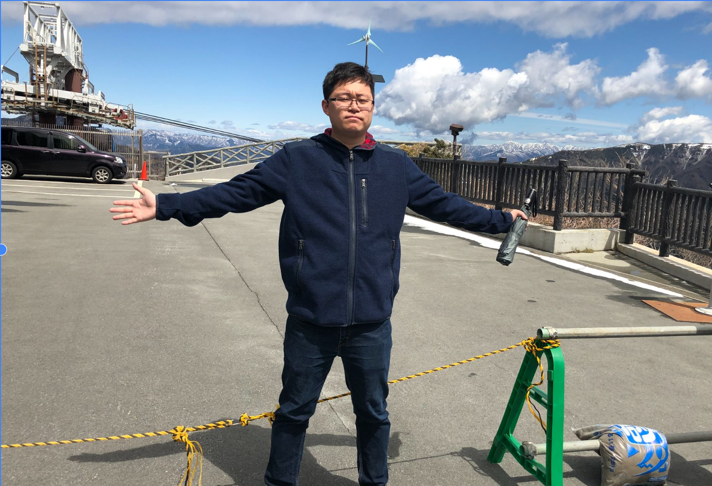
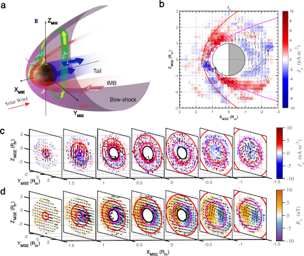
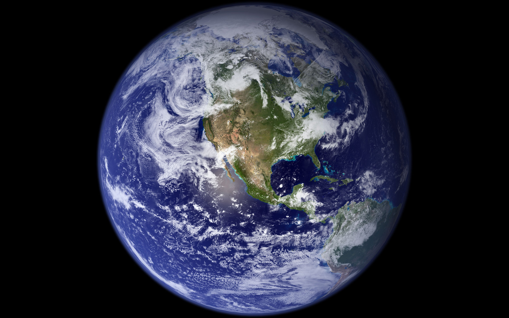
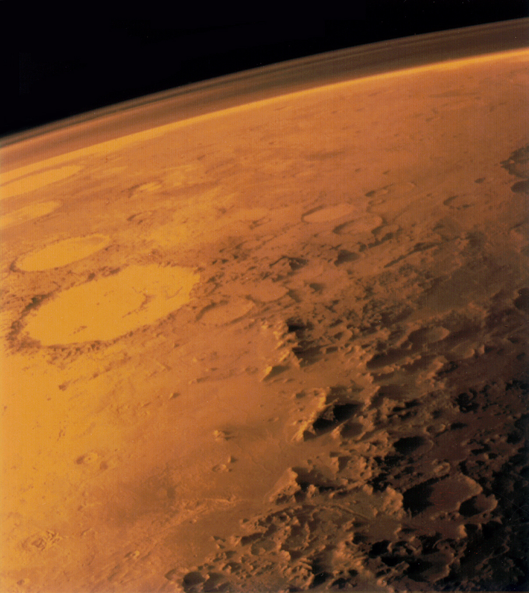
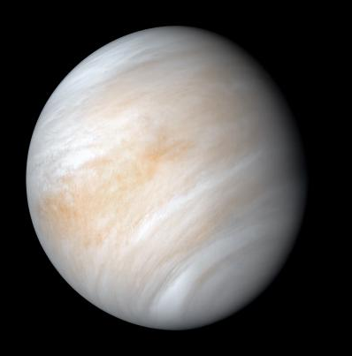

Mars
Martian Space Environment
I am a space enthusiast, hoping to colonize Mars. My current work investigates Martian ionospheric currents, induced magnetospheres, and plasma dynamics.
Postdoctoral Associate | Boston University
I am a Postdoctoral Associate at the Center for Space Physics, Boston University. I mainly work on the Martian space environment, and I love uncovering the space physics of other planets.

Research
My work focuses on the electrodynamics of planetary plasma environments, especially how the solar wind couples to unmagnetized planets such as Mars and Venus.
Mars
I am a space enthusiast, hoping to colonize Mars. My current work investigates Martian ionospheric currents, induced magnetospheres, and plasma dynamics.
Venus
Comparative studies of unmagnetized planets help reveal which plasma processes are universal across Mars, Venus, and other bodies.
Earth
Earth provides a natural reference point for understanding magnetic fields, plasma coupling, and the wonders of our planet.
Featured Work
Selected recent publications. A fuller list is available on Google Scholar.
Nature Communications | 2024
This study uses eight years of MAVEN observations to reveal two current systems in the Martian ionosphere, driven by solar wind forcing and atmospheric neutral winds.
Gao, J., Dong, C., Luhmann, J., Bougher, S., & Zhang, C. New insights into the current systems in the Venusian induced magnetosphere. Journal of Geophysical Research: Planets, 131, e2025JE009531. First author; corresponding author. DOI
Gao, J., Dong, C., Zhang, C., Qin, Y., Shekarpaz, S., Li, X., et al. Physics-informed neural networks for modeling the Martian induced magnetosphere. Geophysical Research Letters, 53, e2025GL121532. First author; corresponding author. DOI
Zhang, C., Dong, C., Zhou, H., Halekas, J. S., Li, X., Gao, J., et al. Global energy transport and conversion in the solar wind-Mars interaction: MAVEN observations. Journal of Geophysical Research: Planets, 130, e2025JE009295. Co-author. DOI
Tadlock, A., Dong, C., Zhang, C., Fränz, M., Zhou, H., & Gao, J. Magnetic field and plasma asymmetries between the Martian quasi-perpendicular and quasi-parallel magnetosheaths. Geophysical Research Letters, 52, e2025GL118172. Co-author. DOI
Gao, J., Li, S., Mittelholz, A., Rong, Z., Persson, M., Shi, Z., et al. Two distinct current systems in the ionosphere of Mars. Nature Communications, 15, 9704. First author; corresponding author. DOI
Gao, J., Rong, Z., Zhang, Q., Mittelholz, A., Zhang, C., & Wei, Y. Influence of upstream solar wind on magnetic field distribution in the Martian nightside ionosphere. Earth and Planetary Physics, 8(5), 728-741. First author. DOI
Wang, Y., Cui, J., Wei, Y., Wu, Z., Fan, K., Rong, Z., ... & Gao, J. The response of Martian photoelectron boundary to the 2018 global dust storm. Science China Earth Sciences, 67(9), 2772-2782. Co-author.
He, F., Rong, Z., Wu, Z., Gao, J., Fan, K., Zhou, X., ... & Wei, Y. Martian dust storms: reviews and perspective for the Tianwen-3 Mars sample return mission. Remote Sensing, 16(14), 2613. Co-author.
Yue, Y., Gao, J., He, F., Wei, Y., Cai, S., Wang, H., ... & Pan, Y. Evolution and disappearance of the paleo-West Pacific anomaly: implications to the future of South Atlantic anomaly. Physics of the Earth and Planetary Interiors, 353, 107214. Second author. DOI
Panovska, S., Poluianov, S., Gao, J., Korte, M., Mishev, A., Shprits, Y. Y., & Usoskin, I. Effects of global geomagnetic field variations over the past 100,000 years on cosmogenic radionuclide production rates in the Earth's atmosphere. Journal of Geophysical Research: Space Physics, e2022JA031158. Co-author.
Li, S., Lu, H., Cao, J., Cui, J., Ge, Y., Zhang, X., Rong, Z., Li, G., Li, Y., Gao, J., & Wang, J. Global electric fields at Mars inferred from multifluid Hall-MHD simulations. The Astrophysical Journal, 949(2), 88. Co-author.
Gao, J., Korte, M., Panovska, S., Rong, Z., & Wei, Y. Geomagnetic field shielding over the last one hundred thousand years. Journal of Space Weather and Space Climate, 12, 31. First author. DOI
Gao, J., Korte, M., Panovska, S., Rong, Z., & Wei, Y. Effects of the Laschamps excursion on geomagnetic cutoff rigidities. Geochemistry, Geophysics, Geosystems, 23, e2021GC010261. First author. DOI
Gao, J., Rong, Z., Klinger, L., Li, X., Liu, D., & Wei, Y. A spherical harmonic Martian crustal magnetic field model combining data sets of MAVEN and MGS. Earth and Space Science, 8, e2021EA001860. First author. DOI
Gao, J., Rong, Z., Persson, M., Stenberg, G., Zhang, Y., Klinger, L., et al. In situ observations of the ion diffusion region in the Venusian magnetotail. Journal of Geophysical Research: Space Physics, 126, e2020JA028547. First author. DOI
Yan, L., Gao, J., Chai, L., Zhao, L., Rong, Z., & Wei, Y. Revisiting the strongest Martian X-ray halo observed by XMM-Newton on 2003 November 19-21. The Astrophysical Journal Letters, 883, L38. Second author. DOI
Gao, J., Rong, Z., Cai, Y., Lui, A. T. Y., Petrukovich, A. A., Shen, C., et al. The distribution of two flapping types of magnetotail current sheet: implication for the flapping mechanism. Journal of Geophysical Research: Space Physics, 123(9), 7413-7423. First author. DOI
CV
Center for Space Physics, Boston University.
Developed Mars magnetic field models and released code/data through Mars_PINN_Mag and Mars_G110_model.
Media
Research highlights, news posts, and profile links migrated from the original Google Sites media page.

Focus Paper
Two distinct current systems in the ionosphere of Mars.
Read
Top Downloaded Article
News highlight from the Journal of Space Weather and Space Climate.
Read
Top Cited Article
A spherical harmonic Martian crustal magnetic field model combining MAVEN and MGS data sets.
Read
Profile
Publication metrics, citations, and profile pages.
Google ScholarContact Information